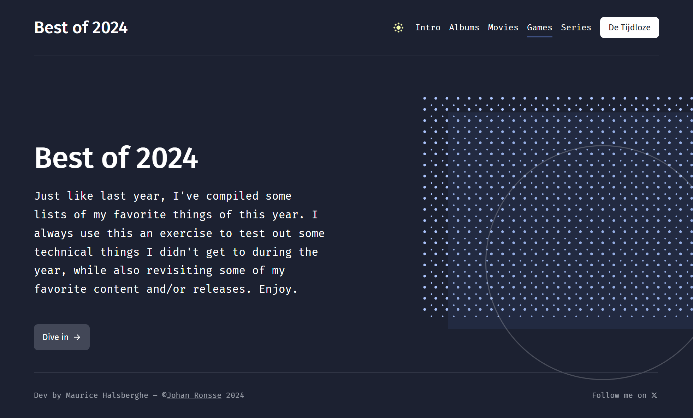
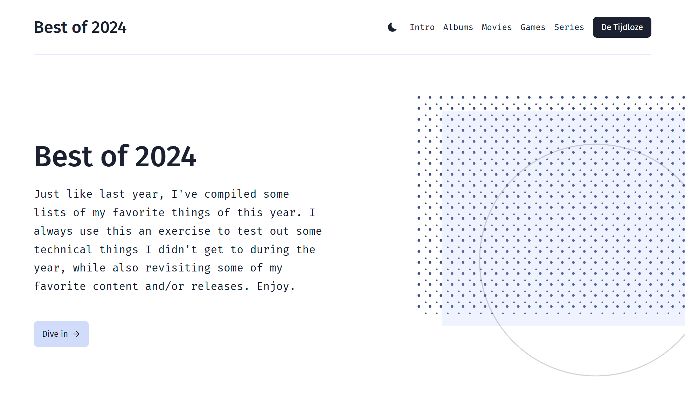

Recap website of 2024
Best of 2024
This website offers a recap of the best albums, movies, series, and games of 2024, all neatly listed. You can also explore this year’s edition of the Tijdloze 100.
I created this site to practice my CSS and JavaScript skills. It is based on the website by Johan Ronsse. All data is loaded from an API and displayed clearly on separate pages.

